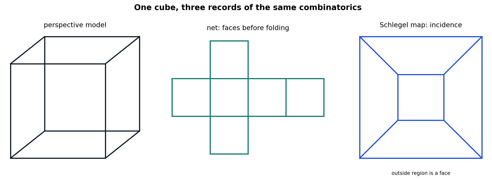
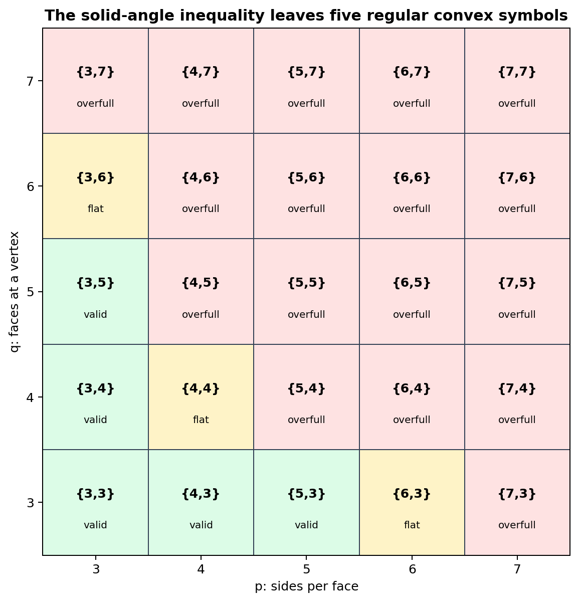
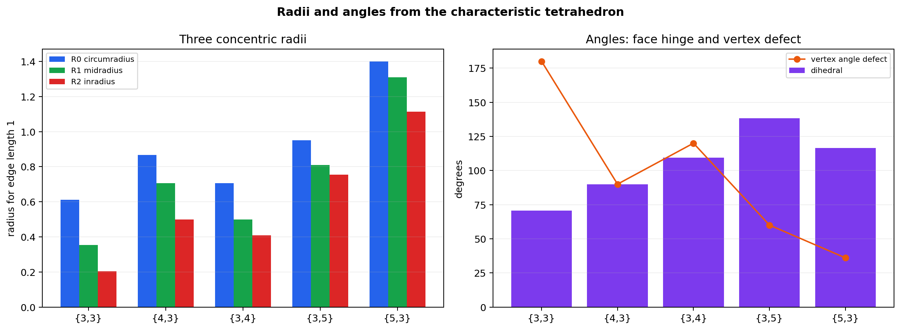
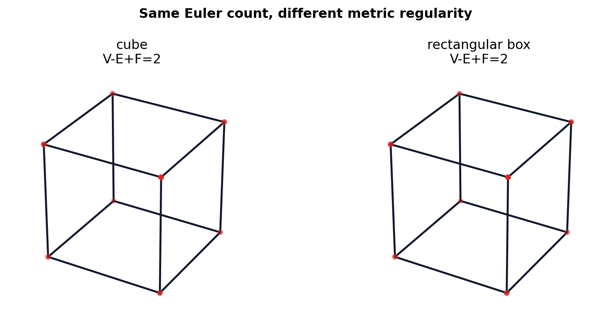

Source Span
Printed pages 148-159; PDF pages 166-177.
Core Question
Why do only five regular symbols \(\{p,q\}\) survive?
Chapter Invariants
Euler counts, edge equality, radii, dihedral angles, and reciprocal duality.
The Platonic solids are exactly the regular convex polyhedra whose local face data, Euler topology, metric radii, and duality checks all agree.
Printed pages 148-159; PDF pages 166-177.
Why do only five regular symbols \(\{p,q\}\) survive?
Euler counts, edge equality, radii, dihedral angles, and reciprocal duality.
Pyramids, prisms, and antiprisms prepare the construction language.
Nets, models, and Schlegel diagrams record different data.
\(V-E+F=2\) and \(qV=2E=pF\) constrain \(\{p,q\}\).
\(\{3,3\},\{4,3\},\{3,4\},\{3,5\},\{5,3\}\).
Radii, angle defect, and dihedral angles distinguish the solids.
Dual polyhedra swap vertices and faces.
\(V=6,\ E=10,\ F=6,\ \chi=2\).
\(V=10,\ E=15,\ F=7,\ \chi=2\).
\(V=10,\ E=20,\ F=12,\ \chi=2\).
All three triangulations are watertight and retain Euler characteristic two.

Shows spatial form, but hides some incidences behind visible faces.
Shows a buildable face layout, but cuts edges that are adjacent in space.
Shows planar graph incidence while sacrificing metric lengths and angles.
All five Schlegel graphs are planar and have Euler value \(2\).
$$V-E+F=2,\qquad qV=2E=pF$$
$$(p-2)(q-2)<4$$
\(\{3,3\},\{4,3\},\{3,4\},\{3,5\},\{5,3\}\).
\(\{3,6\}\), \(\{4,4\}\), and \(\{6,3\}\) are flat rather than spherical.

\(\{3,3\}\): \(V=4,E=6,F=4\).
\(\{4,3\}\): \(V=8,E=12,F=6\).
\(\{3,4\}\): \(V=6,E=12,F=8\).
\(\{3,5\}\): \(V=12,E=30,F=20\).
\(\{5,3\}\): \(V=20,E=30,F=12\). Every constructed edge length is \(1\) to roundoff.
Dihedral angle \(90^\circ\), angular defect \(90^\circ\).
Dihedral angle \(109.471^\circ\), angular defect \(120^\circ\).
Dihedral angle \(138.190^\circ\), angular defect \(60^\circ\).
\(\phi(p,q)=\psi(q,p)\), and tetrahedron plus octahedron dihedral angles sum to \(180^\circ\).

\(\{4,3\}\leftrightarrow\{3,4\}\); \(12\) shared original edges generate dual edges.
\(\{5,3\}\leftrightarrow\{3,5\}\); \(30\) shared original edges.
\(\{3,3\}\) is self-dual.
Maximum reciprocal edge orthogonality residual is \(4.74\times10^{-17}\).

\(V=8,\ E=12,\ F=6,\ \chi=2\).
Distinct edge lengths are \(1.0,\ 1.45,\ 2.1\).
Radii range from \(0.5\) to \(1.05\), so reciprocal placement is not regular.
Euler characteristic and reciprocal graph survive, but metric equality fails.
\(V-E+F=2\) holds for the constructed spherical polyhedra.
\((p-2)(q-2)<4\) leaves only five positive cases.
Radii and dihedral angles distinguish solids with the same Euler behavior.
Duality swaps \(\{p,q\}\) and \(\{q,p\}\), with the tetrahedron self-dual.